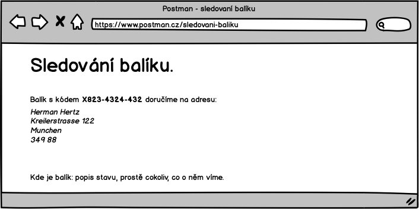

UC-06 Sledování balíku
Zákazník bude možnost sledovat stav zásilky, co se s ní děje.
Stránka, kde se to dozví bude vypadat násldovně:

Na stránku se dostave z odkazu, který bude vypadat:
https://postman.cz/sledovani-baliku/<kod-baliku>
S tím, že <kod-baliku> se nahradí skutečným kódem balíku.
Tento odkaz bude umístěn na šabloně potvrzující objednávku a zaplacení